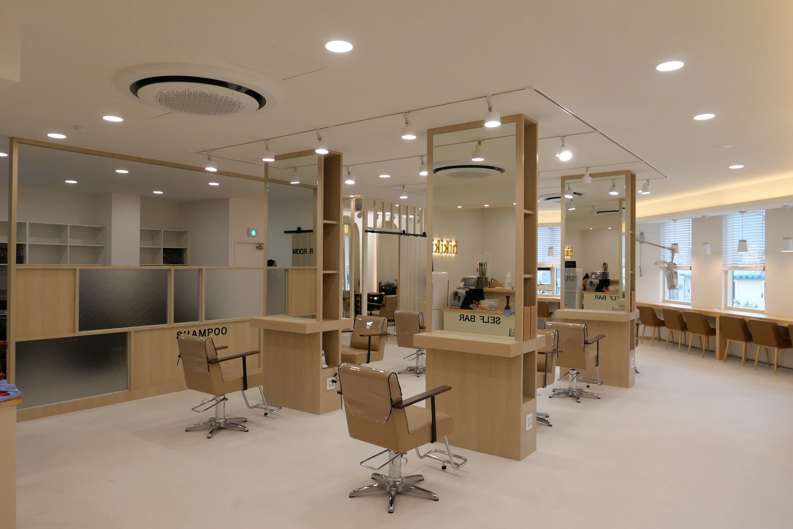

BUILT PROJECT / 2019
시공 · BUILT전포동 미용실JEONPO HAIR SALON
독립형 거울과 우드 파티션, 창가 좌석이 이어지는 밝은 헤어 살롱.

01PROJECT OVERVIEW
빛과 우드 톤으로 이어지는 살롱.
밝은 바닥과 우드 톤 가구를 바탕으로, 중앙 시술석과 창가 좌석이 나란히 이어지는 현장입니다. 유리와 목재를 조합한 파티션으로 공간을 나누고, 아치형 거울과 간접조명으로 각 자리의 표정을 더했습니다.
PROJECT GALLERY
공간의 장면들